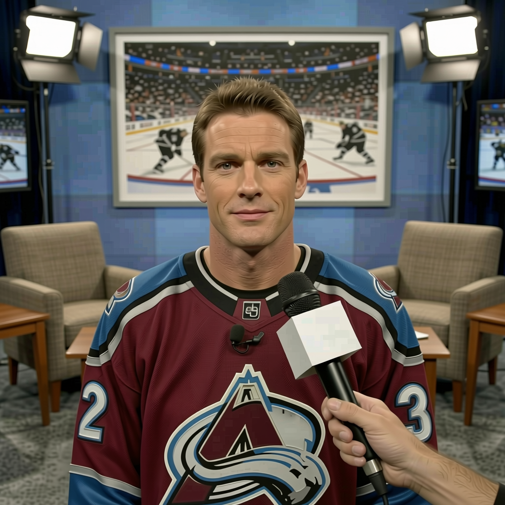

Teemu Selanne: the long way round, still scoring at 28
The Finnish right wing, six days into his time at [[team:COL]], sat with Marcus Bell and talked about kindergarten classrooms, a military stint, an offer sheet from Calgary, and why his morale is at 100.
 Marcus BellRinkside reporter · The Tunnel
Marcus BellRinkside reporter · The Tunnel
3:42 · synthetic voices, produced from the record · download
 Teemu Selanne85 joined
Teemu Selanne85 joined  Colorado Avalanche on 2004-12-01, six days before this sit-down. He is 34, has 28 goals and 45 points in 26 games this season, and carries 0 years left on a $6.50M contract. His morale on the Bureau's Morale Scale sits at 100.
Colorado Avalanche on 2004-12-01, six days before this sit-down. He is 34, has 28 goals and 45 points in 26 games this season, and carries 0 years left on a $6.50M contract. His morale on the Bureau's Morale Scale sits at 100.
Transcript
Marcus Bell here, with Teemu Selanne of Colorado. Teemu, welcome to the desk. You're six days in, what's the first thing you noticed about this room?
Yeah. The guys are good. I mean, I know some of them already, Joe, Peter, but the younger ones, uh, they are just, they work a lot. That's what I noticed.
You're 34 in here. The average age in the room is 28.1. People look at you and they see the veteran, the old head.
Yeah, but, uh, I am not the only one. There are five of us, 33 or older. I am not the old man alone. And the young ones, six of them are 24 or younger, they bring, you know, they bring the speed. I just try to, I just try to keep up sometimes.
Let me put a number on it. 28 goals in 26 games. You're 34 years old and you're putting up a 17.0 minutes a night role. Does that surprise you?
I don't know if it surprises. I think, I think when you are, when you still want to be out there, the legs, they come. And here, with Peter and Joe, the puck finds you. You don't have to, you don't have to force it so much.
You're on a line with ], who the Bureau has at 89 overall, and ] at 84. What's it like sharing ice with those two?
Peter, he sees, he sees things two seconds before everyone. I just, I just have to be, I have to be open and he will, he will put it there. Joe is the same. So, you know, I just drive to the net. My job is simple.
Let's go back further. You were drafted in 1988, 10th overall. You went to the Jets' camp and then sent yourself back to Finland. Why?
I had to go back. The army. One year, Finnish Defence Forces. So, no choice. And then, then I played for Jokerit. So, I was, I was happy there.
Before all that, you spent three years as a kindergarten teacher while you were playing junior hockey in Helsinki. Is that real?
It is real. I teach, I teach five-year-olds. They do not care that you play hockey. They care that you can, you can open the juice box. That was harder than the playoffs, I think.
You've said before that being small as a kid made you competitive. You were small enough that nobody expected anything from you. Did that stick?
Yeah. When you are small, you learn, you learn that you need to, you need to be first to the puck. You cannot wait. And that is still, I still play like that. I am not big now, but the way is the same.
The offer sheet. Calgary came in with $2.7 million and Winnipeg matched. You were 22 years old. What do you remember about that summer?
I remember my agent calling. I remember thinking, okay, now I am rich or I am, or I am nothing. And then Winnipeg matched. So I went there. But I did not, I did not pick the team, so, you know.
You started that Godfathers' Foundation, raising money for sick kids in Helsinki. You mentioned the children's hospital before. Does that come from the teaching years?
Yeah, in a way. When you are with the kids and then you see them in the hospital, the same kids, you think, this is not right. So you do what you can. It is small. But you do it.
You have a twin brother, Paavo, who became a field hockey player instead. Did you two push each other?
Yeah, Paavo. We played hockey and football together. Then he said, no, I like this one better, and he was right, because he won championships in field hockey and I did not, not in that sport. So he beat me at the one thing I tried to give him.
The Bureau's Development Index has you a point below your base grade. A point. Your overall is 81 today. Does that number sit with you at all?
No. I have 28 goals. I do not need a number to tell me if I can play. If I cannot, I stop. But today I can. So.
Fair enough. Morale, though. The Bureau has you at 100. Perfect score. That's the number I want to talk about.
I like it here. I like my room. The guys are good, my family is fine, I can play. What else do you want me to say? I am happy. You can print that.
Your contract has 0 years left. $6.50M. Are you thinking about next year?
No. I think about tonight. Tonight I drive to the net, Peter puts the puck there, maybe I score. That is the thinking I do. The rest is, is for my agent.
Teemu, thanks for sitting down. Back to you.